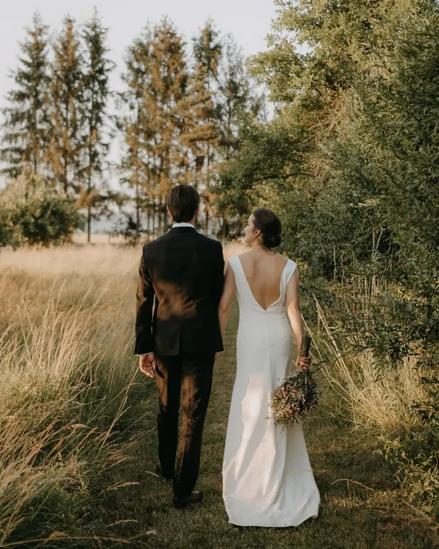
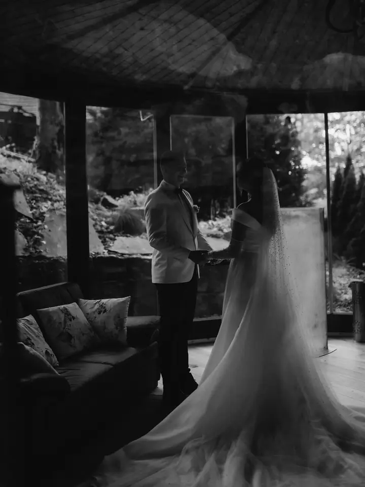
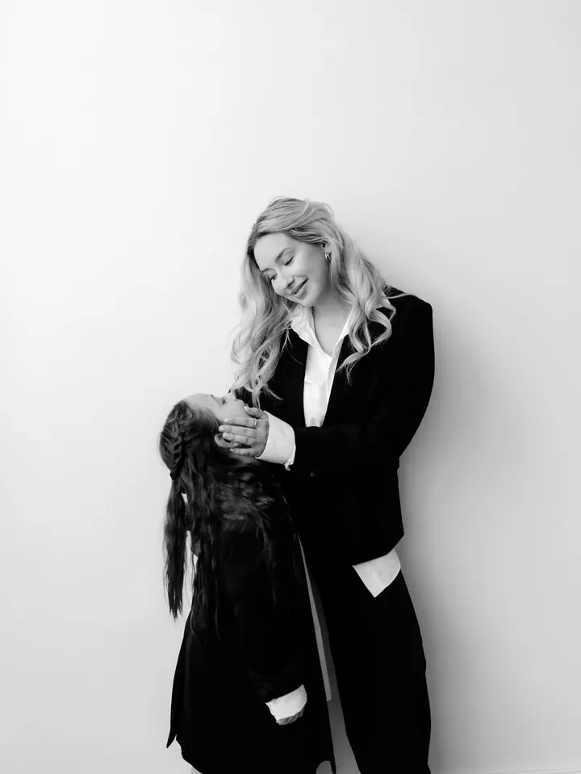
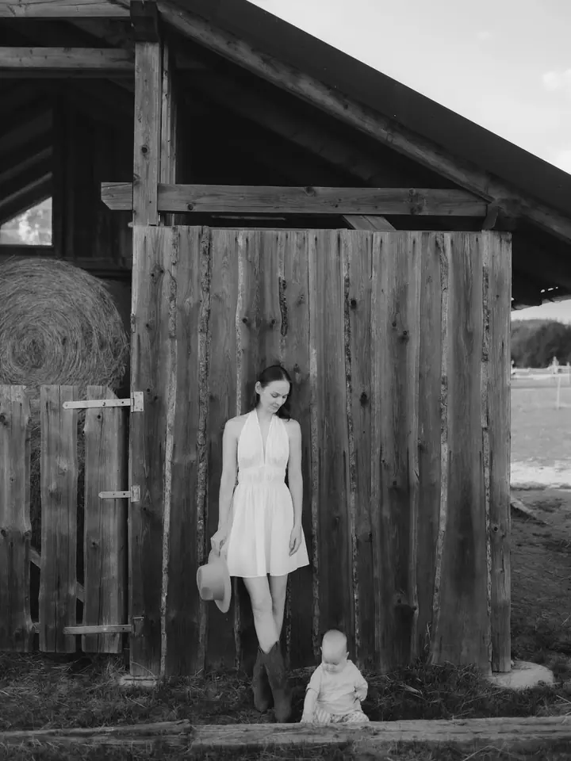

Svatební focení
Zachytím Váš svatební den od příprav po večerní oslavu. Napište mi, kdy a kde se svatba koná, a domluvíme se. Cena od 7 000 Kč.

Jmenuji se Lucie Polášková a jsem rodinná a svatební fotografka z Olomouce. Fotím svatby, páry a rodiny a ženy v těhotenství a mateřství, v přírodě, v ateliéru i u Vás doma.
Rezervovat termínAhoj, tady Lucie. První foťák jsem v ruce držela před dvanácti lety a od té doby jsem ho nepustila. Dnes fotím svatby, páry, rodiny a ženy v těhotenství, nejčastěji v Olomouci a okolí, ale ráda přijedu i tam, kde si mě budete přát.


Fotky upravuji barevně i černobíle, aby si každý našel to svoje. Vedle svateb mám nejraději své focení Mezi námi, portréty žen v mateřství a těhotenství, ke kterým patří i profesionální make-up, úprava vlasů a styling.
Vyfotím Vás kdykoliv a kdekoliv. A když u toho bude dost kafe a čokolády, bude to jedině výhoda.
Co fotím
Zachytím Váš svatební den od příprav po večerní oslavu. Napište mi, kdy a kde se svatba koná, a domluvíme se. Cena od 7 000 Kč.
Portréty žen v mateřství a těhotenství. Součástí je profesionální make-up, úprava vlasů, styling oblečení a 20 upravených fotografií v barvě i černobíle.
Focení v přírodě, v ateliéru nebo u Vás doma. Vyberete si 25 upravených fotografií v barevné i černobílé verzi, vizáž a styling je možné přiobjednat.
Společné fotky pro dva, venku v přírodě, v ateliéru nebo doma. Fungují stejné balíčky jako u rodinného focení, ve větším dostanete online galerii s 50 a více fotografiemi.
Postup
Ozvěte se e-mailem nebo přes formulář. U svatby prosím připište, kdy a kde se koná.
Společně vybereme balíček, místo focení a případně vizáž a styling.
Sejdeme se v přírodě, v ateliéru, u Vás doma nebo na Vaší svatbě a v klidu se fotíme.
Vyberete si fotografie, které Vám upravím v barevné i černobílé verzi.
Otázky
Nejčastěji v Olomouci a v Olomouckém kraji, ale ráda přijedu i tam, kde si mě budete přát.
Svatební focení začíná na 7 000 Kč. Napište mi datum a místo svatby a pošlu Vám konkrétní nabídku.
Profesionální make-up a úpravu vlasů, styling oblečení a 20 upravených fotografií podle Vašeho výběru v barevné i černobílé verzi, za 8 200 Kč.
Balíček I. za 4 000 Kč obsahuje 25 upravených fotografií podle Vašeho výběru, každá další stojí 150 Kč. V balíčku II. za 5 200 Kč dostanete online galerii všech povedených fotografií, zhruba 50 a více.
